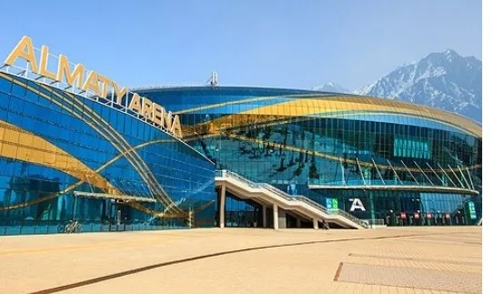
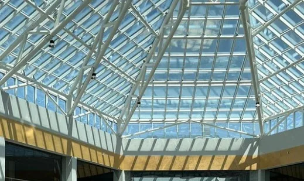
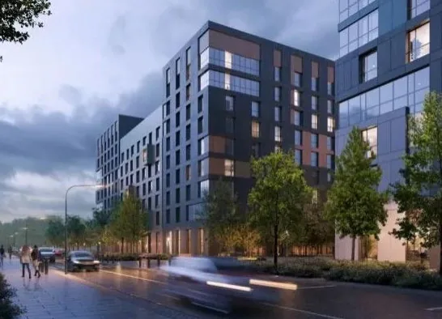
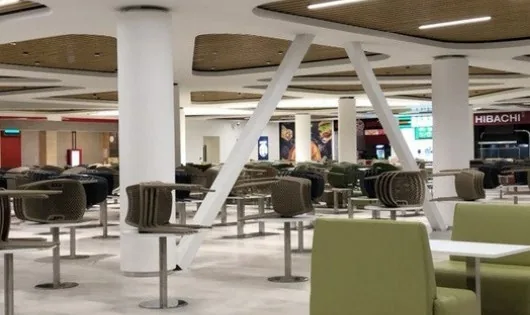
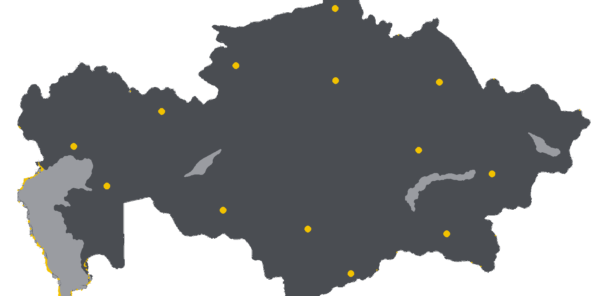

СТРОИМ. СДАЁМ. ОТВЕЧАЕМ.
250+ проектов. 2000+ специалистов. Жилые, коммерческие и промышленные объекты, инфраструктура, проектирование, реконструкция. Казахстан и СНГ.
- 20+
- лет опыта
- 250+
- проектов
- 2000+
- специалистов
Жилое строительство, коммерческое строительство, промышленные объекты, инфраструктура и дороги, проектирование и инжиниринг, реконструкция, спортивные покрытия, освещение площадок.
ШЕСТЬ НАПРАВЛЕНИЙ. ОДНА ОТВЕТСТВЕННОСТЬ.


ОБЪЕКТЫ СДАНЫ. СОСТАВ РАБОТ — НА КАРТОЧКЕ.




СПОРТ — ОТДЕЛЬНЫЙ КАТАЛОГ.


Прайс в ₸ не опубликован: нужны цены и условия от заказчика.
Раздел «Покрытия» → · Каталог · 13 позиций → · Освещение · 14 типов → · Подобрать за 60 сек →
50+ ГОРОДОВ. ОДНА КАРТА.
- 50+
- городов
- 200+
- объектов
- 15
- проектов СНГ
- Алматы41
- Павлодар32
- Астана28
- Караганда19
- Шымкент16
- Усть-Каменогорск14
- Актобе12
- Костанай11

ОТ ЗАДАЧИ ДО СДАЧИ.
- 01
Анализ
Изучаем задачу и площадку. Фиксируем вводные.
- 02
Проектирование
Готовим документацию и согласования.
- 03
Строительство
Выполняем работы на объекте.
- 04
Ввод
Финальные проверки и передача объекта.
ЗАЯВКА. 3 ПОЛЯ.
20+ лет на объектах. Казахстан и СНГ. Оставьте вводные — подготовим расчёт.